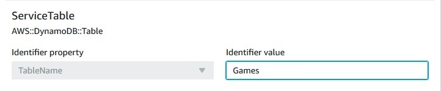

Die vorliegende Übersetzung wurde maschinell erstellt. Im Falle eines Konflikts oder eines Widerspruchs zwischen dieser übersetzten Fassung und der englischen Fassung (einschließlich infolge von Verzögerungen bei der Übersetzung) ist die englische Fassung maßgeblich.
Beheben von Abweichungen mit einer Importoperation
Es kann Fälle geben, in denen die Konfiguration einer Ressource von der beabsichtigten Konfiguration abgewichen ist und Sie die neue Konfiguration als vorgesehene Konfiguration akzeptieren möchten. In den meisten Fällen würden Sie die Abweichungsergebnisse beheben, indem Sie die Ressourcendefinition in der Stack-Vorlage mit einer neuen Konfiguration aktualisieren und dann eine Stack-Aktualisierung ausführen. Wenn die neue Konfiguration jedoch eine Ressourceneigenschaft aktualisiert, die ersetzt werden muss, wird die Ressource während der Stack-Aktualisierung neu erstellt. Wenn Sie die vorhandene Ressource beibehalten möchten, können Sie die Ressourcenimportfunktion verwenden, um die Ressource zu aktualisieren und die Abweichungsergebnisse zu beheben, ohne dass die Ressource ersetzt wird.
Das Beheben der Abweichung für eine Ressource durch eine Importoperation besteht aus den folgenden grundlegenden Schritten:
-
Fügen Sie der Ressource ein DeletionPolicy-Attribut hinzu, für das Retain (Beibehalten) festgelegt ist. Dadurch wird sichergestellt, dass die vorhandene Ressource beibehalten und nicht gelöscht wird, wenn sie aus dem Stack entfernt wird.
-
Entfernen Sie die Ressource aus der Vorlage und führen Sie eine Stack-Aktualisierungsoperation aus. Dadurch wird die Ressource aus dem Stack entfernt, aber nicht gelöscht.
-
Beschreiben Sie den tatsächlichen Zustand der Ressource in der Stack-Vorlage und importieren Sie dann die vorhandene Ressource wieder in den Stack. Dadurch wird die Ressource wieder in den Stack eingefügt und die Unterschiede in den Eigenschaften behoben, die die Abweichungsergebnisse verursacht haben.
Weitere Informationen zum Ressourcenimport finden Sie unter Integrieren vorhandener Ressourcen in die CloudFormation-Verwaltung. Eine Liste der Ressourcen, die den Import unterstützen, finden Sie unter Ressourcen, die Importoperationen unterstützen.
In diesem Beispiel verwenden wir die folgende Vorlage mit der Bezeichnung templateToImport.json.
In diesem Beispiel nehmen wir an, dass ein Benutzer eine Ressource außerhalb von CloudFormation geändert hat. Nachdem eine Abweichungserkennung ausgeführt wurde, haben wir festgestellt, dass für GamesTable BillingMode in PAY_PER_REQUEST geändert wurde. Weitere Informationen zur Abweichungserkennung finden Sie unter Erkennen von nicht verwalteten Konfigurationsänderungen an Stacks und Ressourcen.

Unser Stack ist jetzt veraltet, unsere Ressourcen sind live, aber wir wollen die vorgesehene Ressourcenkonfiguration beibehalten. Dies ist möglich, indem wir die Abweichung durch eine Importoperation beheben, ohne die Services zu unterbrechen.
Beheben von Abweichungen mit einer Importoperation unter Verwendung der CloudFormation-Konsole
Schritt 1. Aktualisieren des Stacks mit der Löschrichtlinie Retain (Beibehalten)
So aktualisieren Sie den Stack mithilfe eines DeletionPolicy-Attributs mit der Option Retain
Melden Sie sich bei der AWS Management Console an und öffnen Sie die AWS CloudFormation-Konsole unter https://console.aws.amazon.com/cloudformation
. -
Wählen Sie auf der Seite Stacks den Stack mit der Abweichung aus.
-
Wählen Sie Update (Aktualisieren) und dann im Bereich mit den Stackdetails die Option Replace current template (Aktuelle Vorlage ersetzen).
-
Geben Sie auf der Seite Specify template (Vorlage angeben) mit einer der folgenden Methoden die aktualisierte Vorlage an, die das
DeletionPolicy-Attribut mit der OptionRetainenthält:-
Wählen Sie Amazon S3-URL aus und geben Sie dann die URL für Ihre Vorlage im Textfeld an.
-
Wählen Sie Vorlagendatei hochladen aus und suchen Sie dann nach Ihrer Vorlage.
Wählen Sie anschließend Weiter aus.
-
-
Überprüfen Sie die Seite Specify stack details (Stackdetails angeben) und wählen Sie Next (Weiter).
-
Überprüfen Sie die Seite Configure stack options (Stackoptionen konfigurieren) und wählen Sie Next (Weiter).
-
Wählen Sie auf der Seite Review
stack-name(Stack-Name überprüfen) die Option Update stack (Stack aktualisieren).
Ergebnisse: Auf der Seite Events (Ereignisse) Ihres Stacks lautet der Status UPDATE_COMPLETE.
Um die Abweichung durch eine Importoperation zu beheben, ohne Services zu unterbrechen, geben Sie eine Retain DeletionPolicy für die Ressourcen an, die Sie aus dem Stack entfernen möchten. Im folgenden Beispiel haben wir der Ressource GamesTable ein DeletionPolicy-Attribut hinzugefügt, das auf Retain festgelegt ist.
Schritt 2. Entfernen von abgewichenen Ressourcen, zugehörigen Parametern und Ausgaben
So entfernen Sie abgewichene Ressourcen, zugehörige Parameter und Ausgaben
-
Wählen Sie Update (Aktualisieren) und dann im Bereich mit den Stackdetails die Option Replace current template (Aktuelle Vorlage ersetzen).
-
Geben Sie mit einer der folgenden Methoden auf der Seite Specify template (Vorlage angeben) Ihre aktualisierte Vorlage mit ihren Ressourcen, zugehörigen Parametern und Ausgaben an, die aus der Stack-Vorlage entfernt wurden:
-
Wählen Sie Amazon S3-URL aus und geben Sie dann die URL für Ihre Vorlage im Textfeld an.
-
Wählen Sie Vorlagendatei hochladen aus und suchen Sie dann nach Ihrer Vorlage.
Wählen Sie anschließend Weiter aus.
-
-
Überprüfen Sie die Seite Specify stack details (Stackdetails angeben) und wählen Sie Next (Weiter).
-
Überprüfen Sie die Seite Configure stack options (Stackoptionen konfigurieren) und wählen Sie Next (Weiter).
-
Wählen Sie auf der Seite Review
stack-name(Stack-Name überprüfen) die Option Update stack (Stack aktualisieren).
Ergebnisse: Die Logical ID (Logische ID) GamesTable hat den Status DELETE_SKIPPED auf der Seite Events (Ereignisse) Ihres Stacks.
Warten Sie, bis CloudFormation die Stack-Aktualisierungsoperation abgeschlossen hat. Entfernen Sie nach Abschluss der Stack-Aktualisierungsoperation die Ressource, die zugehörigen Parameter und Ausgaben aus der Stack-Vorlage. Importieren Sie dann die aktualisierte Vorlage. Nach Abschluss dieser Aktionen sieht die Beispielvorlage jetzt wie folgt aus.
Schritt 3. Aktualisieren der Vorlage, damit Sie dem Live-Status Ihrer Ressourcen entspricht
So aktualisieren Sie die Vorlage, damit sie dem Live-Status von Ressourcen entspricht
-
Um die aktualisierte Vorlage zu importieren, wählen Sie Stack actions (Stack-Aktionen) und dann Import resources into stack (Ressourcen in Stack importieren).

-
Prüfen Sie auf der Seite Import overview (Importübersicht) die Liste der Dinge, die Sie während dieser Operation angeben müssen, und wählen Sie dann Next (Weiter).
-
Geben Sie auf der Seite Specify template (Vorlage angeben) mit einer der folgenden Methoden Ihre aktualisierte Vorlage an:
-
Wählen Sie Amazon S3-URL aus und geben Sie dann die URL für Ihre Vorlage im Textfeld an.
-
Wählen Sie Vorlagendatei hochladen aus und suchen Sie dann nach Ihrer Vorlage.
Wählen Sie anschließend Weiter aus.
-
-
Identifizieren Sie auf der Seite Ressourcen identifizieren jede Zielressource.
-
Wählen Sie unter Bezeichnereigenschaft den Typ des Ressourcenbezeichners aus. Die Eigenschaft
TableNameidentifiziert beispielsweise die RessourceAWS::DynamoDB::Table. -
Geben Sie unter Identifier value (Bezeichnerwert) den tatsächlichen Eigenschaftswert ein. In der Beispielvorlage lautet der
TableNamefür dieGamesTable-RessourceGames. -
Wählen Sie Next (Weiter).
-
-
Überprüfen Sie die Seite Specify stack details (Stack-Details angeben) und wählen Sie Next (Weiter).
-
Überprüfen Sie auf der Seite Import overview (Importübersicht), welche Ressourcen importiert werden, und wählen Sie dann Import resources (Ressourcen importieren). Dadurch wird der Ressourcentyp
AWS::DynamoDB::Tablezurück in Ihren Stack importiert.
Ergebnisse: In diesem Beispiel haben wir die Ressourcenabweichung durch eine Importoperation behoben, ohne Services zu unterbrechen. Sie können den Fortschritt einer Importaktion in der CloudFormation-Konsole auf der Registerkarte Events (Ereignisse) überprüfen. Importierte Ressourcen weisen den Status IMPORT_COMPLETE auf, gefolgt vom Status CREATE_COMPLETE mit dem Statusgrund Resource import complete (Ressourcenimport abgeschlossen).
Warten Sie, bis CloudFormation die Stack-Aktualisierungsoperation abgeschlossen hat. Aktualisieren Sie Ihre Vorlage nach Abschluss der Stack-Aktualisierungsoperation so, dass sie dem tatsächlichen, abgewichenen Zustand Ihrer Ressourcen entspricht. Beispiel: BillingMode wird auf PAY_PER_REQUEST festgelegt und ReadCapacityUnits sowie WriteCapacityUnits werden auf 0 festgelegt.